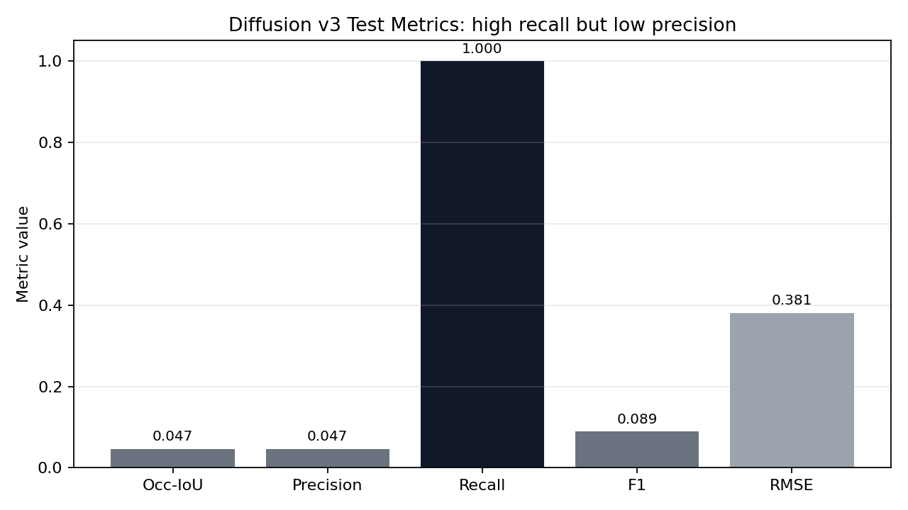
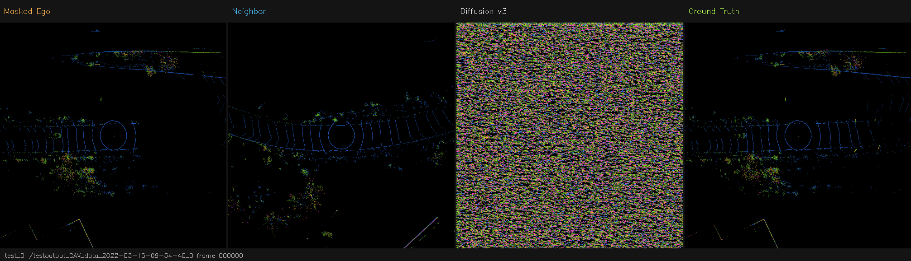
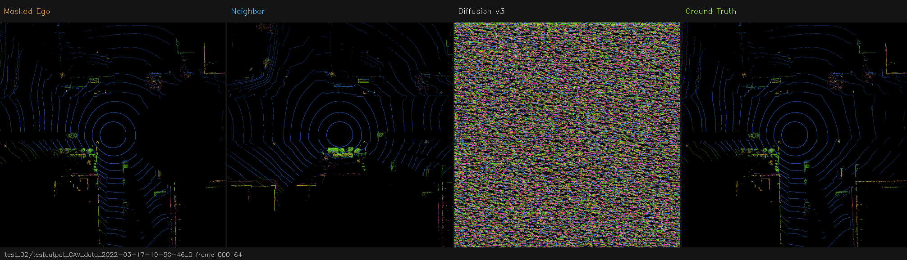
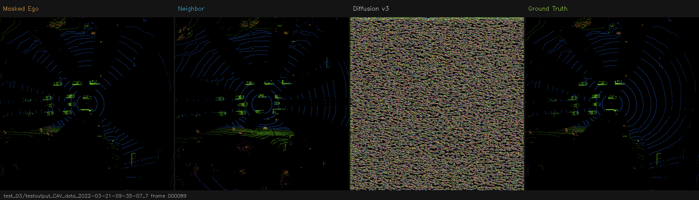
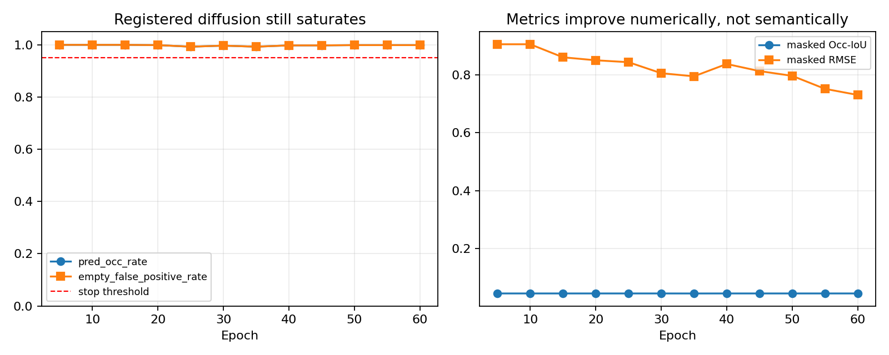
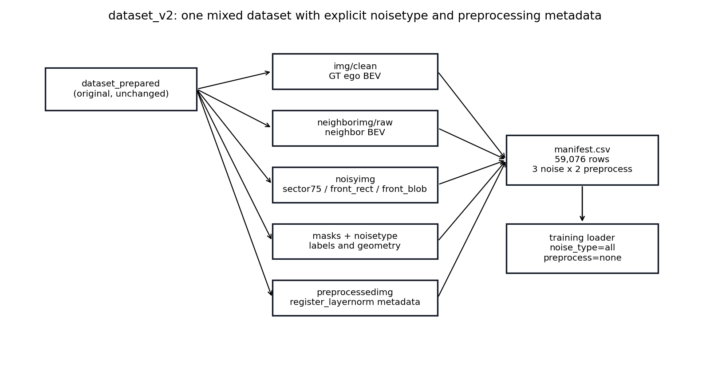
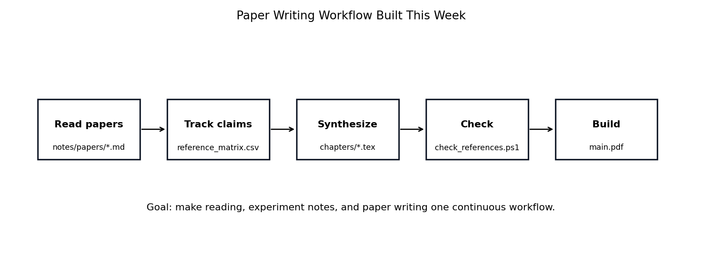

Date: May 14, 2026
Project: V2V BEV Reconstruction under Front-Region
Sensor Occlusion
This week I moved the project from simply following model-level suggestions to making project-level decisions. The main shift was:
noisetype and preprocessing metadata.dataset_v2.The key conclusion is direct: Diffusion is currently a negative baseline for this BEV reconstruction setup, while U-Net/Pix2Pix on the new mixed-noise dataset are now the next main experiments.
Diffusion v3 was the first complete and reproducible Diffusion baseline. Compared with the earlier diffusion attempts, I fixed the training/evaluation protocol before judging it:
Diffusion v3 test result:
| Metric | Value | Meaning |
|---|---|---|
| masked Occ-IoU | 0.0467 | Very low overlap with true occupied cells |
| masked precision | 0.0467 | Most predicted occupied cells are false positives |
| masked recall | 1.0000 | High only because it predicts almost everything occupied |
| masked F1 | 0.0893 | Low balanced occupancy score |
| masked RMSE | 0.3810 | Poor reconstruction magnitude |
| fused full PSNR | 17.00 dB | Full BEV looks better only because visible region is copied back |

Interpretation: v3 is not just a little weak. It has a clear failure mode: high recall with very low precision means it predicts too much occupied space in the hidden region.
These examples show why the numerical result is not enough by itself: the generated hidden region is noisy / over-occupied and does not recover clean multi-layer BEV structure.



After v3 failed, I did not blindly rerun the same setup. I tested the teacher-inspired preprocessing idea as a controlled follow-up.
I added a BEV-level preprocessing path:
I also changed the diffusion training objective to reduce the all-occupied failure:
| Component | Setting | Reason |
|---|---|---|
| noise loss weight | 0.2 | Reduce pure denoising dominance |
| shared reconstruction weight | 2.0 | Force x0 reconstruction to matter more |
| empty penalty weight | 1.0 | Penalize predicting obstacles in truly empty hidden cells |
| height consistency | 0.1 | Preserve multi-layer height structure |
| occupancy BCE | 0.0 | Previous BCE/focal variants worsened all-occupied saturation |
Run root:
/home/syin94/scratch/MEng_Project/runs/training_diffusion_registered_x0_seed42_v1Important log lines:
[regx0] Run root: /home/syin94/scratch/MEng_Project/runs/training_diffusion_registered_x0_seed42_v1
[regx0] train_diffusion sha256: a320cc647820c071a4abc67918511a1dde78aaafb0130c4f1b76b59de31d0f38
[regx0] dataset sha256: 32eb2ac259b3bb14446d8be56ca0af8f2d392b689cba69a285a9d41876483141
epoch 5 done | val IoU=0.0447 prec=0.0447 rec=1.0000 val RMSE=0.906115 fusedPSNR=9.47 predOcc=1.000 emptyFP=1.000
epoch 30 done | val IoU=0.0447 prec=0.0447 rec=0.9971 val RMSE=0.806104 fusedPSNR=10.49 predOcc=0.997 emptyFP=0.997
epoch 60 done | val IoU=0.0447 prec=0.0447 rec=0.9994 val RMSE=0.730949 fusedPSNR=11.34 predOcc=0.999 emptyFP=0.999
Decision: I stopped the run around epoch 62 because the diagnostic metrics stayed saturated:
| Epoch | Occ-IoU | Precision | Recall | RMSE | Pred Occ Rate | Empty FP Rate |
|---|---|---|---|---|---|---|
| 5 | 0.0447 | 0.0447 | 1.0000 | 0.9061 | 1.000 | 1.000 |
| 15 | 0.0447 | 0.0447 | 1.0000 | 0.8611 | 1.000 | 1.000 |
| 30 | 0.0447 | 0.0447 | 0.9971 | 0.8061 | 0.997 | 0.997 |
| 45 | 0.0447 | 0.0447 | 0.9982 | 0.8134 | 0.998 | 0.998 |
| 60 | 0.0447 | 0.0447 | 0.9994 | 0.7309 | 0.999 | 0.999 |
Interpretation: registration and per-layer calibration improved the project depth, but they did not solve diffusion saturation. The model still predicted almost the entire hidden region as occupied. This supports reporting Diffusion as a negative baseline rather than spending more GPU time on blind reruns.
I rebuilt the dataset protocol into dataset_v2 without
modifying the original dataset_prepared folder.

| Noise type | Why I chose it |
|---|---|
sector75 |
Original front-sector sensor failure; keeps the official task definition. |
front_rect |
A regular front block occlusion; simple, controlled, and easy to explain. |
front_blob |
An irregular front occlusion; closer to non-uniform real-world occlusion while still deterministic. |
I did not choose random whole-image masking or arbitrary scattered masks because the project is not generic image inpainting. The driving question is front-region BEV recovery when ego sensing is weak.
[dataset_v2] start=Thu 14 May 2026 12:42:32 AM EDT
"base_samples": 9846,
"manifest_rows": 59076,
"materialize_noisy": true,
"split_rows": {
[dataset_v2] size
4.0G /home/syin94/scratch/MEng_Project/data/dataset_v2
"base_samples": 9846,
"manifest_rows": 59076,
"materialize_noisy": true,
"split_rows": {| Item | Value |
|---|---|
| base samples | 9,846 |
| noise types | 3 |
| preprocess types | 2 |
| manifest rows | 59,076 |
| train rows | 42,630 |
| val rows | 4,488 |
| test rows | 11,958 |
| storage used | about 4.0 GB |
Important point: dataset_v2 is a separate folder. The
original dataset is unchanged.
I initially queued separate runs by mask type, but I corrected the
protocol: the main run should train on one mixed dataset using
noise_type=all.
Current submitted mixed-noise jobs:
=== SQUEUE ===
JOBID NAME ST TIME TIME_LIMIT NODELIST(REASON)
60948542 unet_v2_all42 PD 0:00 1-00:00:00 (Priority)
60948543 pix2_v2_all42 PD 0:00 1-00:00:00 (Priority)
=== SACCT ===
JobID|JobName|State|Elapsed|Timelimit|ExitCode
60948542|unet_v2_all42|PENDING|00:00:00|1-00:00:00|0:0
60948543|pix2_v2_all42|PENDING|00:00:00|1-00:00:00|0:0
=== LOG TAIL U ===
=== LOG TAIL P ===
=== RUN DIRS ===Main run configuration:
| Model | Dataset | Noise setting | Preprocess | Seed | Epochs |
|---|---|---|---|---|---|
| U-Net | dataset_v2 | all noise types mixed | none | 42 | 80 |
| Pix2Pix | dataset_v2 | all noise types mixed | none | 42 | 80 |
This is the right next step because it tests whether the model can learn a general recovery policy over multiple front-region occlusion shapes.
I also built a local paper/thesis workflow so reading and writing are not separate from experiments.

Local workspace:
D:/MEng_Project/thesisThe workflow is:
thesis/notes/papers/.references/reference_matrix.csv.This helps me lead the project because each experiment can be tied to literature, assumptions, and paper-writing sections instead of staying as isolated training runs.
sector75, front_rect, and
front_blob.register_layernorm as a fair preprocessing ablation
for U-Net and Pix2Pix, not only Diffusion.My takeaway this week is that the main contribution is no longer just testing three model families. The project is becoming a structured BEV reconstruction study with: